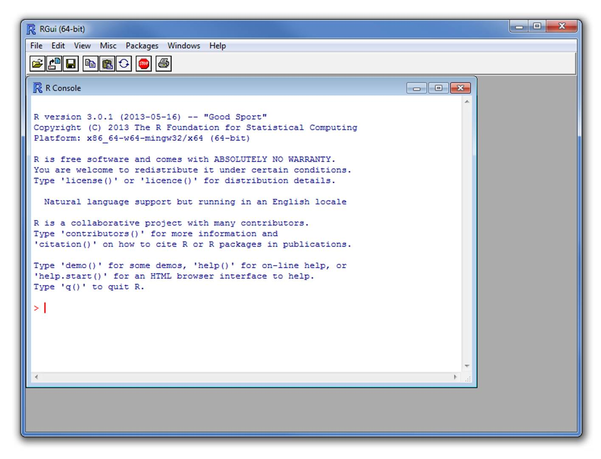
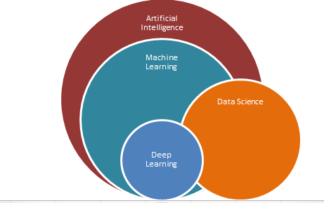
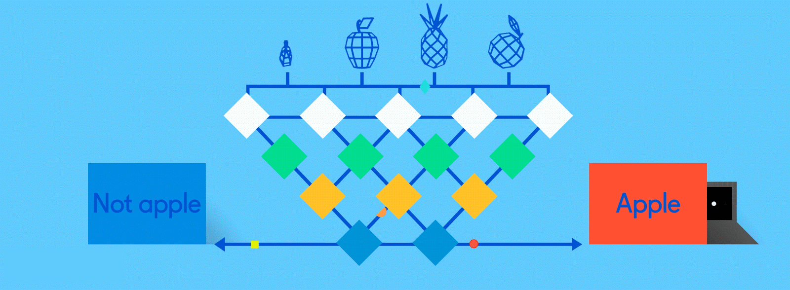
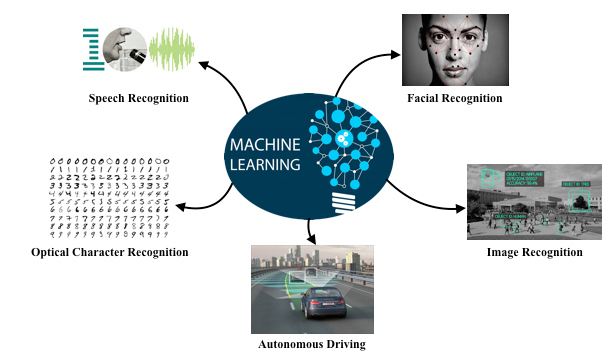
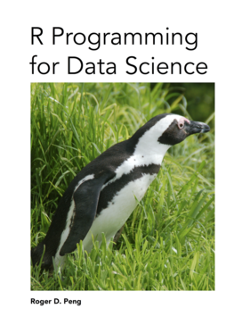

Semillero de R - FacCA
1. Introducción a R y RStudio
Lenguaje R
Características de R
- Útil para administración, gestión e integración de datos.
- Capacidad de graficación robusta.
- Comunidad dinámica de R.
- Sistema basado en bibliotecas.
- Software libre
- Descargar R.
GUI de R
RStudio
Caracterísitcas de RStudio
- Entorno de desarrollo integrado (IDE).
- Interactividad.
- Facilita la investigación reproducible.
- Permite la implementación de otros lenguajes de programación.
- Permite control de versiones (Git).
- Descargar RStudio.
IDE RStudio

Resumen
Flujo de trabajo inicial
- Obtener directorio de trabajo (
getwd()) - Cambiar directorio de trabajo
- Session -> Set Working Directory -> Choose Directory.
- Generar archivo .R (ejemplo: Tarea.R).
- File -> New File -> R Script (Ctrl + Shift + N).
- Guardar archivo .R (script)
- Codificación UTF-8 para lenguaje castellano.
- File -> Save with Encoding -> UTF-8.
Elementos básicos con R
#: comentar código.<-: asignar variables.Ctrl + Enter: ejecutar código.Ctrl + L: limpiar consola.- Funciones
c(): concatenar (crear vectores).data.frame(): crear bases de datos.$: operador para acceder a las variables por su nombre.names(): nombre de variables o columnas.length(): longitud de un vector o número de variables en una base de datos.dim(): dimensiones (filas y columnas) de una matriz o base de datos.plot(): función genérica para graficación. Gráfico de dispersión X vs Y.str(): estructura interna de un objeto.class(): clase atómica de un objeto.
- Tipos de datos: numércios, enteros, caracteres, factores, otros.
- Parámetros de graficación: color, tipo de líneas, tipo de símbolos.
Ciencia de datos (Data Science)
¿Qué es ciencia de datos?

¿Qué es Machine Learning?

Machine Learning: razonamiento intuitivo

Aplicaciones

Aplicaciones

Recursos de información
R for Data Science

R Programming for Data Science
